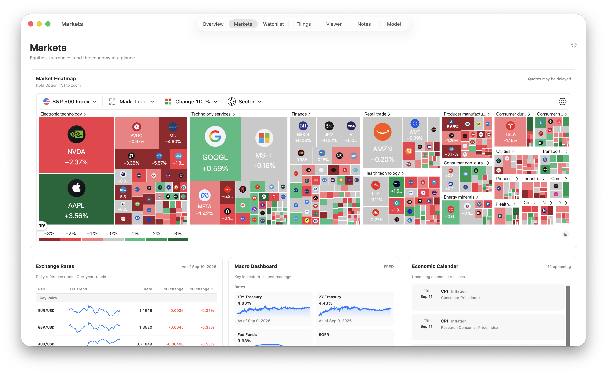
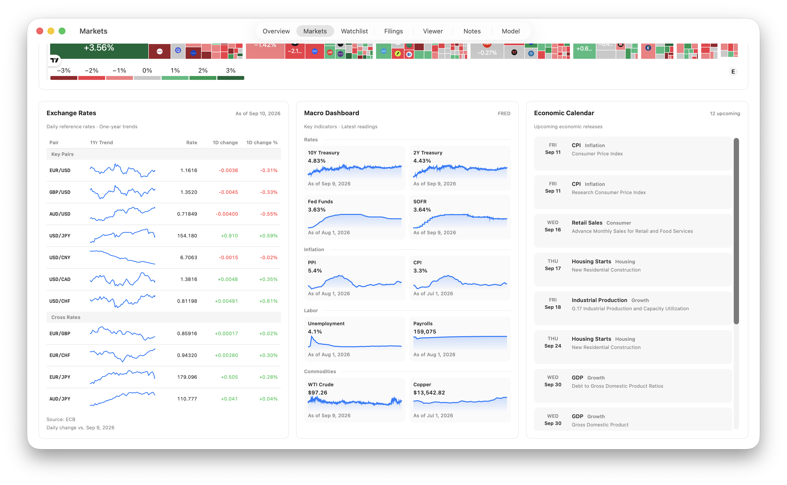

FilrAI Documentation
Markets
Market performance, currencies, and economic data.
Last updated
Market heatmap
The default view displays the S&P 500, grouped by sector and sized by market capitalization.
Use the toolbar to change the index, sizing metric, performance period, or grouping. Hold ⌥ Option while scrolling to zoom.

Exchange rates
Daily ECB reference rates with one-year trends. Cross rates are calculated from the ECB’s euro-based rates.

Macro indicators
Rates, inflation, labor, and commodity indicators from FRED.
| Indicator | Measure |
|---|---|
| 10Y / 2Y Treasury | Constant-maturity yields. |
| Fed Funds / SOFR | Effective federal funds rate and secured overnight financing rate. |
| PPI / CPI | Year-over-year percentage change; PPI covers final demand. |
| Unemployment | Civilian unemployment rate. |
| Payrolls | Total nonfarm employment, in thousands. |
| WTI Crude | Cushing spot price, in USD per barrel. |
| Copper | Monthly price, in USD per metric ton. |
“As of” dates identify the latest available observation for each series. Monthly series can show the first day of the observation month rather than the release date.
Economic calendar
Up to 12 upcoming releases from FRED, covering employment, inflation, GDP, retail sales, industrial production, personal income, and housing. Entries are ordered by date and include the full release name.
Sources & refresh behavior
Exchange rates use ECB reference data; macro indicators and calendar dates come from FRED.
These panels refresh every six hours. Returning to Markets also checks for a refresh when the previous update is at least six hours old. Observation dates follow each source’s publication schedule.